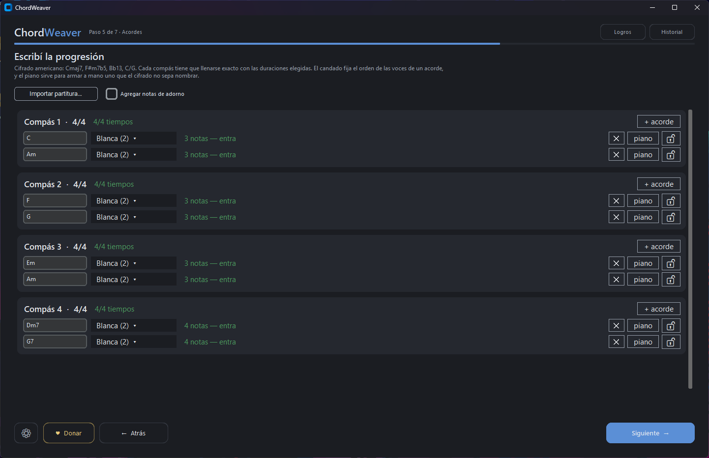
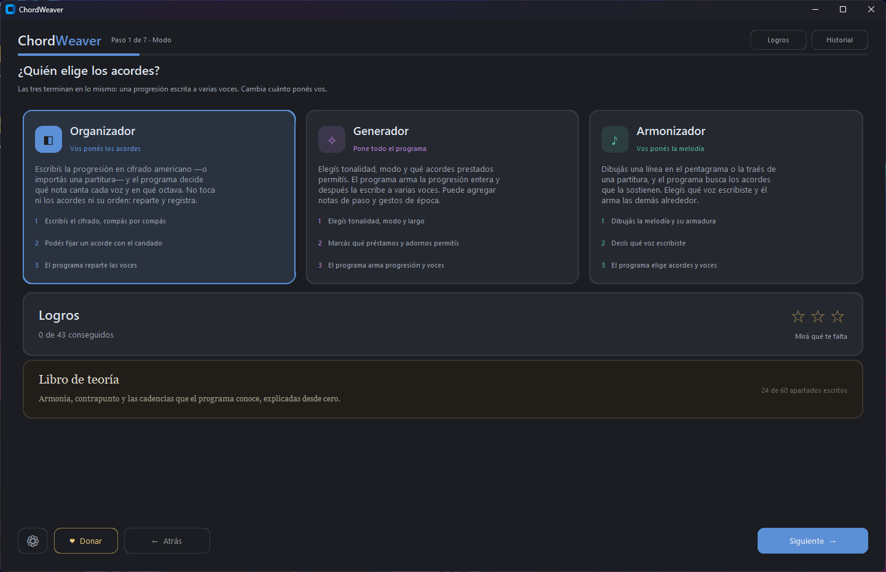
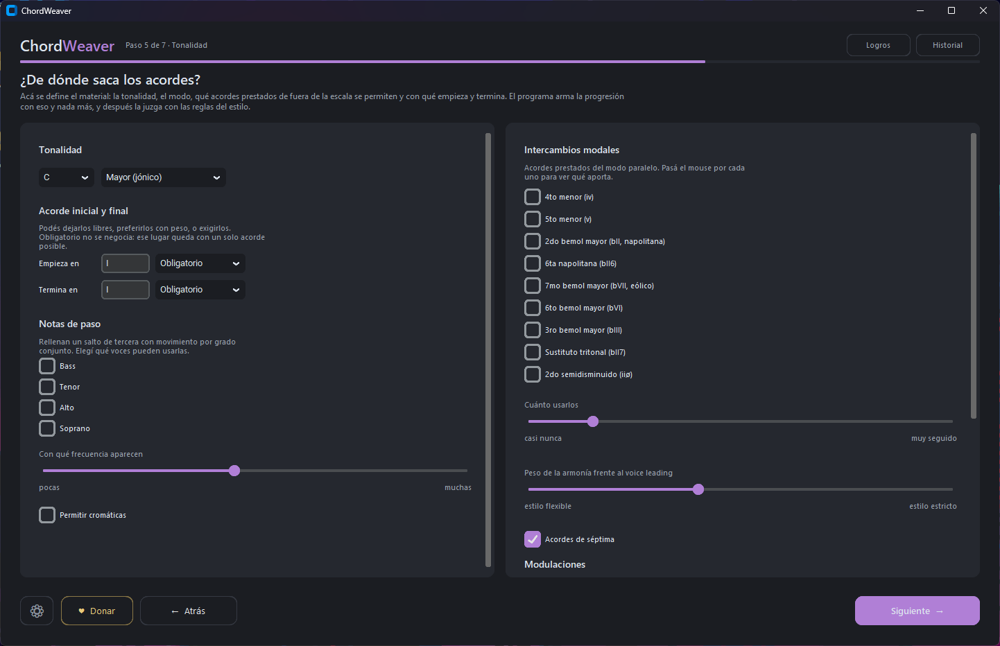
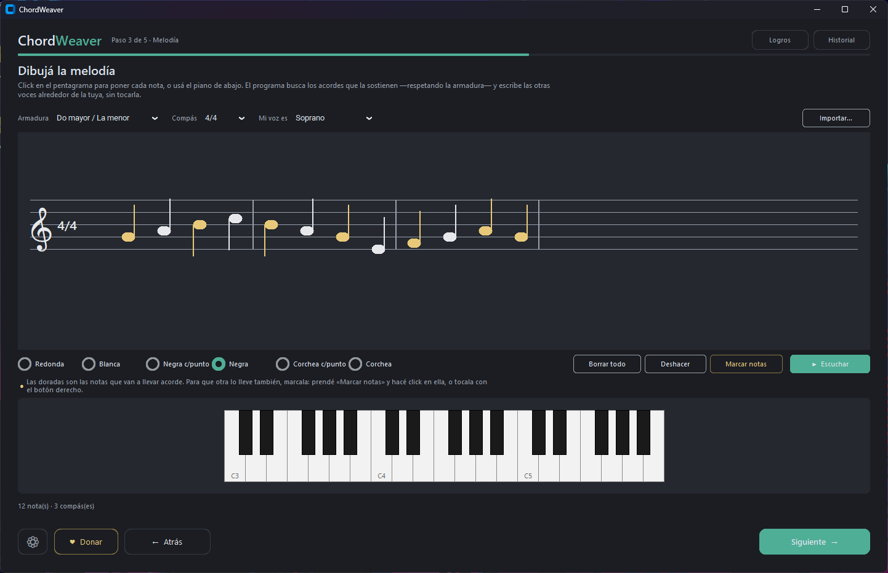
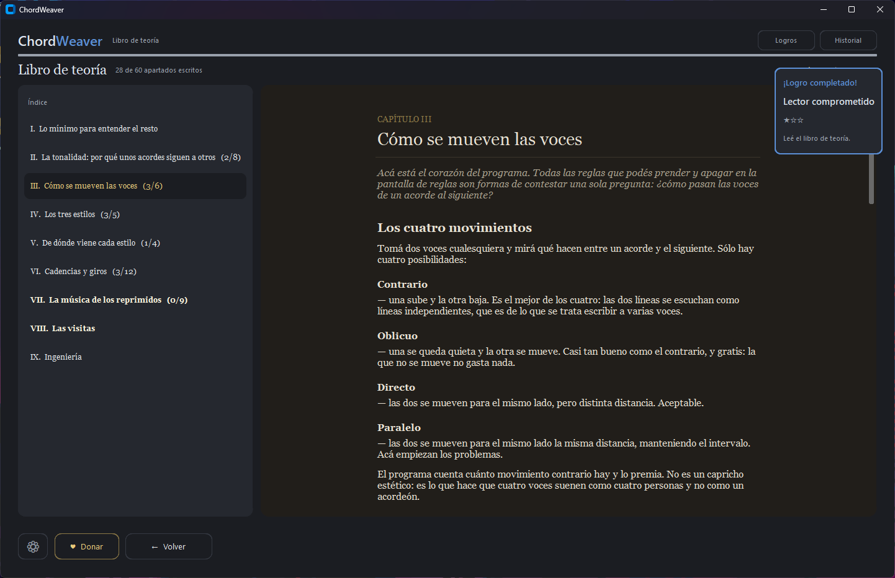
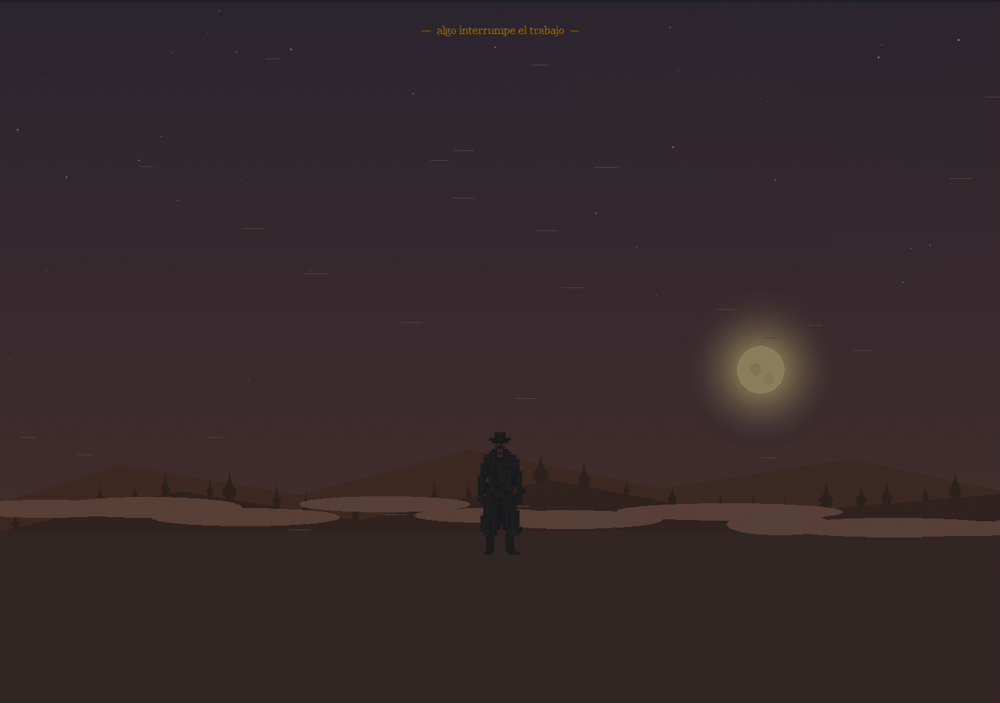

Organizador
Vos ponés los acordes
Escribís la progresión en cifrado americano —o la importás de un MusicXML— y el programa reparte las voces. Podés fijar un acorde con el candado si querés esa disposición exacta y ninguna otra.

Código abierto · Licencia MIT · Windows
Tus acordes, tu melodía, o una hoja en blanco.
Un algoritmo genético convierte cualquiera de las tres en una progresión escrita a varias voces: qué nota canta cada una y en qué octava, con el mínimo movimiento que las reglas del género permitan.
El acorde no se toca. Lo único que se reparte son las voces.

Cómo funciona
Un Do mayor son tres notas, pero cuatro voces tienen que repartírselas: alguien dobla, alguien salta una octava, alguien se queda quieto. Multiplicá eso por cada acorde de la pieza y por cada octava posible, y las combinaciones se cuentan de a millones. ChordWeaver las recorre con un algoritmo genético y se queda con las tres mejores.
Ocho acordes, cuatro voces, reglas del barroco. Pasá el mouse por una voz.
— de movimiento total en ocho acordes: el salto más grande de la pieza es una cuarta, y el bajo entero se mueve cinco semitonos.
Los tres modos
Los tres terminan en lo mismo: una progresión escrita a varias voces, lista para exportar. Lo único que cambia es de dónde salen los acordes.
Vos ponés los acordes
Escribís la progresión en cifrado americano —o la importás de un MusicXML— y el programa reparte las voces. Podés fijar un acorde con el candado si querés esa disposición exacta y ninguna otra.

Pone todo el programa
Elegís tonalidad, modo, con qué acorde empieza y con cuál termina, y cuántos acordes prestados de fuera de la escala tolerás. El programa escribe la armonía entera —qué grado sigue a cuál, dónde cae cada cadencia, qué se toma prestado— y recién después la reparte entre las voces.

Vos ponés la melodía
Dibujás una línea en el pentagrama, con el mouse o con el piano de abajo, y el programa le busca los acordes que la sostienen. Las notas doradas te dicen de antemano cuáles van a llevar acorde.

Armonía
Un acorde de tres notas repartido entre seis voces obliga a doblar tres. Cuál se dobla y cuál queda sola no es un detalle de reparto: es armonía, y cambia el color del acorde. ChordWeaver lo decide uno por uno, y cuando el acorde ya está completo usa las voces que sobran para colorearlo —una sexta, una novena— en vez de repetir la séptima de punta a punta.
Soprano, mezzo, alto, tenor, barítono y bajo. Pasá el mouse por una voz.
— de movimiento total. Ninguna voz cruza a la de al lado, no hay un solo unísono en los nueve acordes, y el salto más grande de toda la pieza es una quinta.
Y en el G7 de ahí arriba la sensible aparece una sola vez. Duplicarla es de las pocas cosas que la armonía de práctica común directamente no perdona, y es una regla que se puede apagar como todas las demás.
Las reglas
La armonía —qué acordes suenan y en qué orden— la ponés vos o la escribe el Generador. El género no la toca: se ocupa de lo otro, que es el contrapunto —cómo se conducen las voces de un acorde al siguiente, qué se prohíbe, qué se premia y con cuánta fuerza. Y todo switch se prende y se apaga por separado: el género sólo define de dónde parte.
El contrapunto de la práctica común. Sin quintas ni octavas paralelas, premia el movimiento contrario, castiga los saltos de tritono y de séptima. Trae adentro el modo coral, que es lo mismo más severo.
Escritura modal, anterior a la tonalidad. Casi todo el movimiento por grado conjunto, ámbito estrecho, tritono prohibido, y tolera las paralelas perfectas porque ahí son el organum y no un error.
Armonía extendida. Lo que manda no es el bajo sino cómo se encadenan la tercera y la séptima de un acorde al siguiente. Mantiene las notas comunes y esquiva las novenas menores.
Es la pregunta obvia, y el proyecto trae la herramienta para
contestarla: audit.py corre las mismas progresiones con
cada género y las mide contra un control con todos los pesos de estilo
apagados. Los números están publicados, incluso donde no favorecen.
El gregoriano es el que menos se despega, y está dicho así en el README: su carácter vive en la armonía, y ahí los acordes los elegís vos.
Qué más hace
Soprano, mezzo, alto, tenor, barítono y bajo, con los registros editables voz por voz si tu coro no entra en el catálogo.
Exporta a los dos, escritos a mano por el programa. Se abren en MuseScore, Sibelius, Finale o lo que uses.
Un botón por solución. El audio está sintetizado por el programa: no se empaqueta ni un solo archivo de sonido.
La que eligió y las dos que quedaron cerca, para que puedas oír qué se negoció en cada una.
Cuando aparece una cadencia rota, un 6/4 cadencial o una sexta en lugar de quinta, te lo marca en la partitura y te explica en una línea qué es.
Rellena los saltos de tercera con movimiento por grado conjunto, y agrega gestos de época sobre el resultado.
Napolitanas, bVII, sustitutos tritonales y dominantes aplicadas, con un dial para decir cuánto color querés.
Lee un MusicXML —también los .mxl comprimidos— y se queda con sus acordes, su ritmo y sus compases.
Las últimas diez producciones quedan guardadas y se pueden volver a escuchar sin regenerar nada.
El mismo motor sin abrir la ventana: cli.py acepta los acordes, el género y todos los switches.
No hay instalador y no escribe fuera de su carpeta. Va en un pendrive y se desinstala tirándola a la papelera.
Librería estándar de Python y nada más. Ni music21, ni numpy, ni una librería de audio.
Y además enseña
Adentro del programa hay un libro de teoría escrito para alguien que no estudió música: armonía, conducción de voces, de dónde viene cada estilo y las cadencias que el programa reconoce, con la receta para que aparezcan.
Pero no está escrito entero de entrada. Cada apartado está atado a algo que tenés que encontrar: el día que te salga una cadencia rota, esa noche el libro tiene un capítulo más. Son sesenta apartados y cuarenta y tres logros, y la única forma de llenarlo es componiendo.

Y hay algo más
No dice qué es. Aparece un botón dorado en la pantalla inicial, y si no lo tocás hoy sigue ahí mañana. Lo que pase después depende de cómo contestes, y no hay una respuesta correcta: hay tres, y cada una lleva a otra parte.
Lo que se recorre se recorre usando el programa normalmente — escribiendo acordes, generando progresiones, dibujando melodías. Al final de cada camino hay música que no elegiste vos, y un capítulo del libro que hasta entonces estuvo cerrado con el título tapado.
Nada de esto se anuncia en ninguna pantalla. Esta página tampoco lo va a arruinar.

Por dentro
Descomprimí el .zip donde quieras y ejecutá
ChordWeaver.exe. No hay instalador, no toca el registro y no
escribe nada fuera de su propia carpeta.
cc82c27c726c7b21f6cb92e4ef71d4972416583014d9eb60e15454be7b9fe55fVer todo lo que cambió en esta versión →
¿Preferís correrlo desde el código?
pip install customtkinter && python app.py